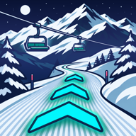

Pisteway: Ski Navigation
Find your way to any run or lift, on the pistes, on iPhone.
Pick a resort, tap a run or a lift on the map, and Pisteway works out a route that goes down runs, up lifts and along connecting paths. It never sends you in a straight line across the mountain.
How it works
- Find your resort. Pisteway suggests the nearest one, or you search 51 resorts with maps built into the app and more than 3,600 ski areas from OpenStreetMap.
- Choose where to go. Tap a run to head for its start, or a lift to head for its bottom station. The route card shows the time, the lifts and runs on the way, and a switch to avoid black runs.
- Ski it. While you ski down, a voice tells you each move, so the phone can stay in a pocket or on an arm strap. Hold the phone up and the camera works like a sat nav: a banner shows the next move and how far away it is, and a trail of chevrons over the live view bends the way the route goes. Lower the phone and the same banner shows with a drawing of the next junction.
- On a lift, it tells you where to get off. Take a different run and it finds a new route from where you are.
Support
Questions, a resort that routes badly, or a bug: email me and I'll reply.
Questions
Does it cost anything?
Pisteway is free. There are no ads, no in-app purchases and no account.
Does it know which lifts and runs are open?
No. The map data comes from OpenStreetMap and doesn't include today's openings or closures. Always follow piste markers, signs and closures, and ask the lift staff if you're unsure.
Does it work without signal?
Directions for the 51 built-in resorts work without mobile signal, because the piste data is inside the app and GPS needs no signal. The 3D map needs a connection to load, and other ski areas need one the first time you open them.
Why does the route sometimes look odd?
Routes follow the runs, lifts and paths that volunteers have mapped in OpenStreetMap. If a link between a run and a lift is missing from the map, Pisteway can't use it. If you spot a route that's wrong, email me the resort and the run and I'll look at it.
Is it safe to use while skiing?
Pisteway is designed so you don't need to look at it while you ski: the voice gives each move. Keep your eyes on the slope. If you want to look at the screen, stop at the side of the run where people above can see you.
What data does it collect?
None. Your location stays on your iPhone and Pisteway has no server. See the privacy policy.
Which devices does it run on?
iPhone with iOS 17 or later, in portrait.